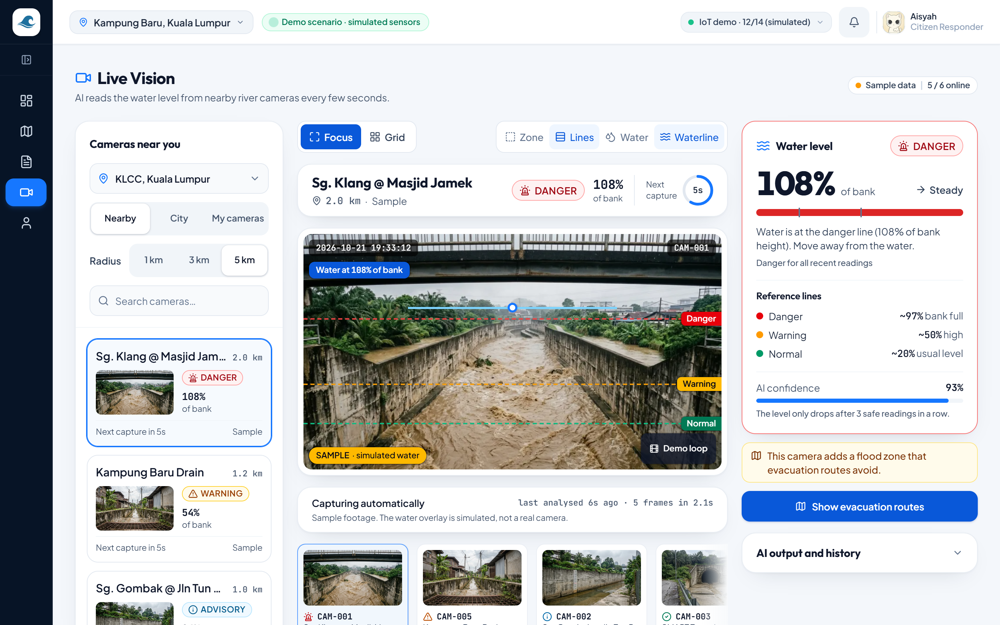
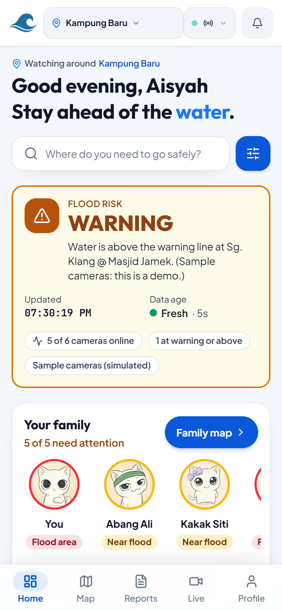
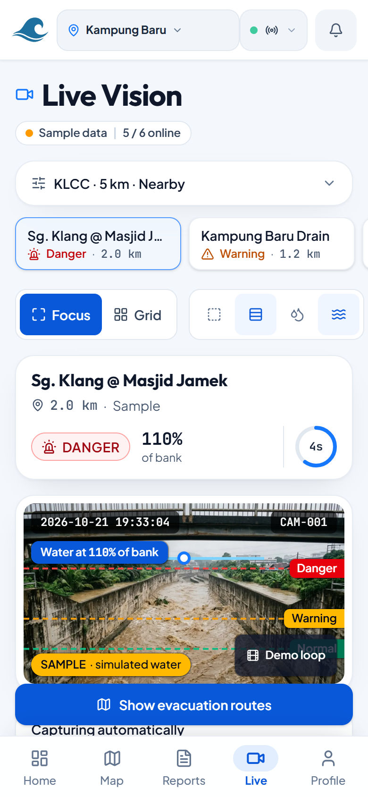
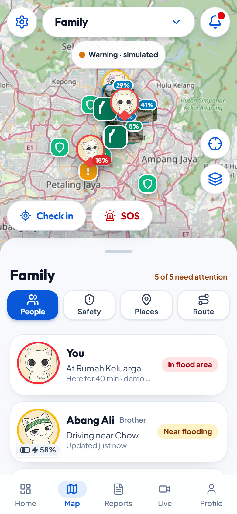

Each camera is read for its water level against calibrated lines (Normal, Warning, Danger). The reading, history and a one-tap "Show evacuation routes" sit on one screen.
SAMPLE CAMERAS · AI-GENERATED IMAGERY
Plain-language risk for the street you are in, with your family circle one tap away.

Live Vision shows water as a % of bank, so a warning rests on evidence, not an old forwarded photo.

Family map, check-in and hold-to-send SOS; routes avoid flooded roads and end at a relief centre.